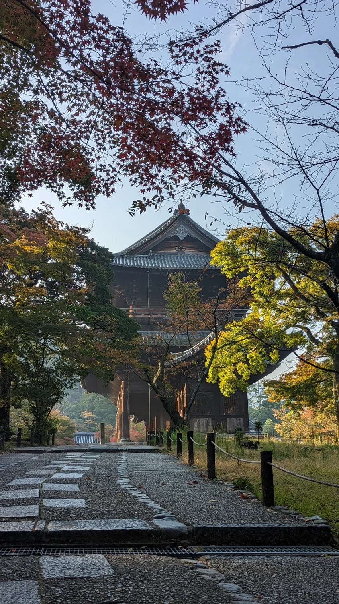
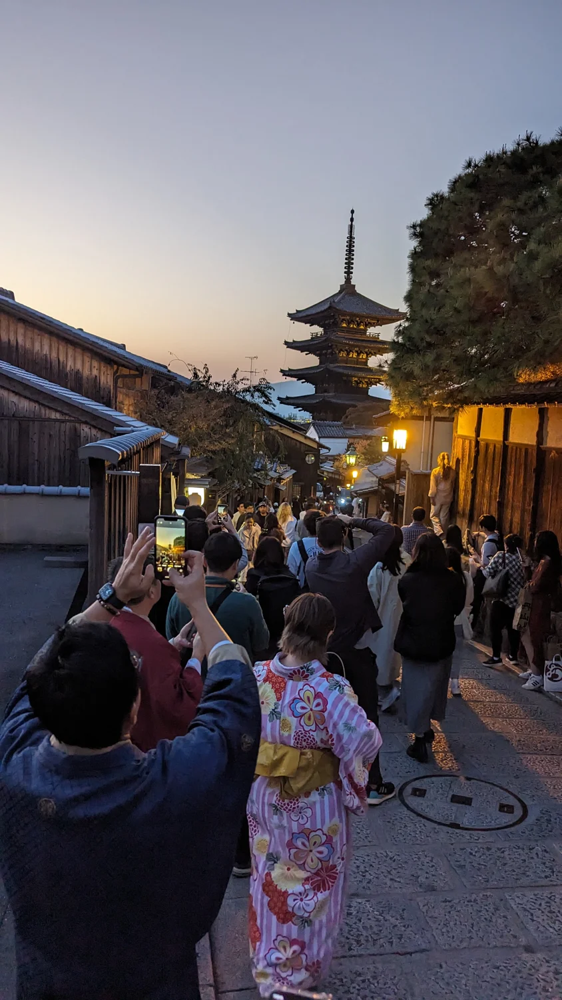
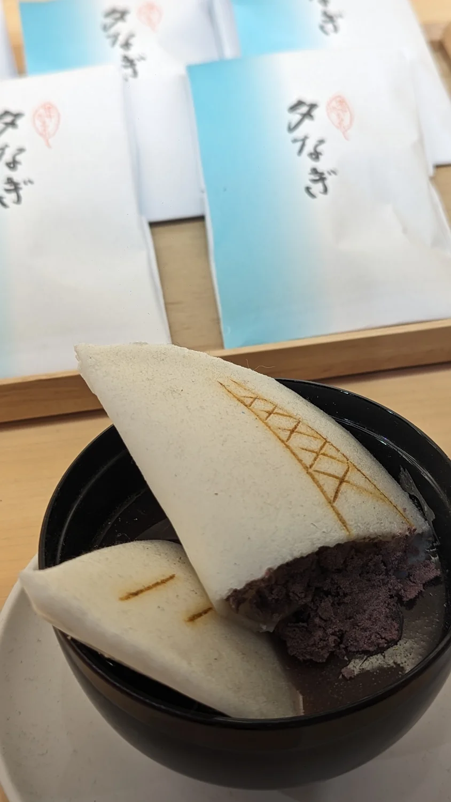
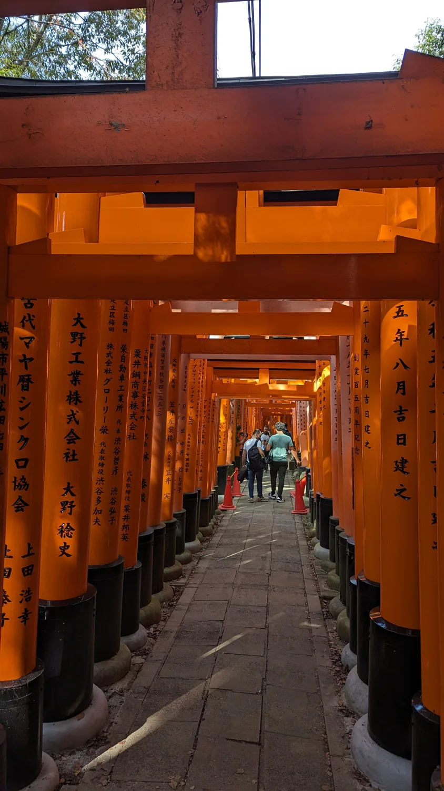
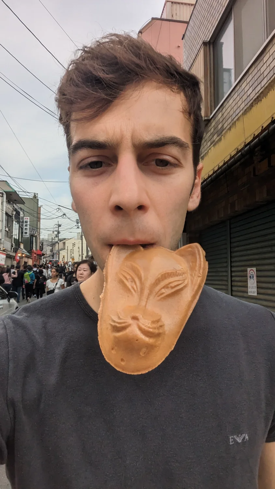
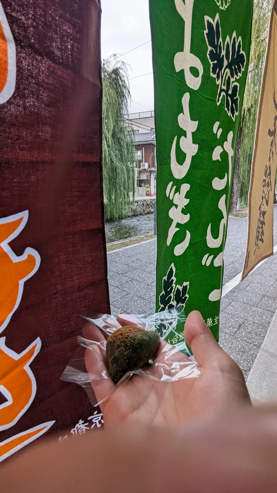

⛩️ (Kyoto Trail 521)
11,21 km450 m ↑1:08:00 in movimento
Partenza alle 5:34. Il giro più mosso: 450 metri di salita in 11,21 km. Nelle note: templi e Philosopher’s Path.
Viaggio selezionato · 2–4 novembre 2023
Due corse tra le colline e le strade di Kyoto. Poi templi, torii, dolci ai fagioli rossi e mochi: i miei percorsi e le soste di quei giorni.
1:59:22 in movimento · i miei tempi registrati
Scarica GPX + soste ↓Il viaggio sul mappamondo ↗
La prima corsa è partita alle 5:34. Nelle note ho scritto di antenne, templi, foglie colorate e Philosopher’s Path. Il giorno dopo ho salutato Kyoto con altri dieci chilometri e le gambe stanche. Tra le due uscite ci sono state le passeggiate, i dolci e il tempo passato a guardare.
Distanze e dislivelli registrati. I tempi sono personali.
11,21 km450 m ↑1:08:00 in movimento
Partenza alle 5:34. Il giro più mosso: 450 metri di salita in 11,21 km. Nelle note: templi e Philosopher’s Path.
10,64 km59 m ↑0:51:22 in movimento
L’ultima esplorazione, alle 7:03. Ho scritto «Legs were dead»: il giorno precedente si faceva sentire.
Foto e pin del viaggio. Gli indirizzi identificati hanno una fonte; le altre soste conservano il ricordo del luogo.

Luogo · Kyoto
La via e la pagoda al tramonto del 2 novembre. Qui ho scattato anche il selfie che apre il carosello.
Passeggiata al tramonto, separata dalle corse
Luogo · Kyoto
La porta del tempio nella luce del mattino del 4 novembre. La visita fotografata è successiva all’uscita registrata di quel giorno.
Dopo la corsa, a piedi

Food · Kyoto
Un dolce con ripieno di fagioli rossi e il banco fotografato il 3 novembre. Il pin è quello dello scatto: il nome del negozio resta da identificare.
Durante l’esplorazione del centro, dopo la corsa

Luogo · Kyoto
Una visita a piedi nella tarda mattina del 4 novembre. I torii del video e della foto appartengono a questa visita; la traccia di corsa non viene allungata per includerli.
Una visita distinta dal giro del mattino

Food · Kyoto
La foto non aveva bisogno di una recensione: mi sono messo il dolce davanti al viso. Il pin conserva il punto di quella sosta a Fushimi.
Dopo la visita a Fushimi Inari

Food · Kyoto
Un mochi davanti alla bandiera verde del negozio, l’ultimo pomeriggio a Kyoto. L’insegna visibile indica yomogi mochi; il nome commerciale non è confermato.
Prima di lasciare Kyoto
2 GPX completi e 6 pin in GeoJSON, KML e CSV. Le tracce includono le elevazioni; tempi e sensori sono rimossi. KML e CSV sono importabili in una mappa personale.
Scarica il pacchetto ↓Attività registrate da Michele Merelli, archivio Intervals/Strava e GPX esportati da Strava. Foto e video originali del viaggio. Nessun collegamento mancante ricostruito. Le informazioni dei locali identificati sono state consultate il 6 novembre 2026; orari, prezzi e condizioni del percorso possono cambiare.
Le soste senza nome commerciale confermato sono memorie geolocalizzate del viaggio. Le foto web sono ridimensionate e prive di EXIF; i GPX scaricabili contengono solo geometria ed elevazione.